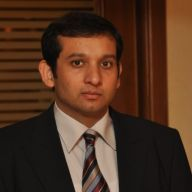

| |
|  |
Muhammad Zubair Malik
Postdoctoral Researcher
The Robotics Institute
Carnegie Mellon University
NSH A407
5000 Forbes Avenue
Pittsburgh PA 15213-3890
USA
Tel: +1 (512) 704 4598
zubair.malik@utexas.edu
|
I am on the academic job market for the next year. Here is my application material.
About Me
I am a postdoctoral researcher at the Robotics Institute (CMU), working on an interdisciplinary project with four advisers/collaborators: Anthony Tomasic (Language Technologies), Charles Garrod (Sofwtare Engineering), Aaron Steinfeld (Robotics), and John Zimmermann (HCI).
Earlier I was a research fellow with the Center for Identity at the University of Texas at Austin where I worked with Dr. Suzanne Barber from August 2013 to September 2014
I completed my PhD with Dr. Sarfarz Khurshid at the University of Texas at Austin in August 2014. My PhD research work was completed in July 2013.
Research Interests
My research focuses on enhancing reliabilityof computer systems through software verification, validation and testing. My work directly enablesadvanced manufacturing, enhances software security, and improves fault tolerance of robots andautonomous computing agents.
I am interested in leveraging the advances in verification, constraint-solving, cloud-computing, big-data and machine-learning for
improving techniques in program transformation, program understanding, security and automated debugging.
Publications
- R. Zaeem, M.Z.Malik and S. Khurshid. Repair Abstractions for More Efficient Data Structure Repair. In Proc. Fourth International Conference on Runtime Verification (RV2013), Rennes, France, September, 2013.
- M. Z. Malik and S. Khurshid. Dynamic Shape Analysis using Topological and Spectral Graph Properties. In Proc. Fifth International Conference on Software Testing, Verification and Validation (ICST 2012), Montreal Canada, April, 2012. [Nominated for the Best Paper Award]
- M. Z. Malik. Dynamic shape analysis of program heap using graph spectra. In Proc. 33rd International Conference on Software Engineering ( ICSE 2011), NIER-Track, Hawaii USA, May 2011.
- M. Z. Malik, J.H.Siddiqui, and S. Khurshid. Program Repair using Data Structure Repair. In Proc. IEEE Fourth International Conference on Software Testing, Verification and Validation(ICST 2011), Berlin, Germany. March 2011.
- D. Gopinath, M.Z. Malik and S. Khurshid. Counter Example Driven Program Repair using Program Contracts. In Proc. 17th International Conference on Tools and Algorithms for the Construction and Analysis of Systems ( TACAS 2011), Saarbrcken, Germany, March 2011.
- M. Z. Malik, K. Ghori, B. Elkarablieh, and S. Khurshid. A Case for Automated Debugging Using Data Structure Repair. In Proc. 24th IEEE/ACM Interna-tional Conference on Automated Software Engineering (ASE 2009), Auckland, New Zealand. Nov 2009.
- M. Z. Malik, A. Pervaiz, E. Uzuncaova, and S. Khurshid. Deryaft: A tool for generating representation invariants of structurally complex data. In Proc. 30th International Conference on Software Engineering (ICSE 2008) Research Demo Paper. Leipzig, Germany. May 2008.
- M. Z. Malik, A. Pervaiz, and S. Khurshid. Generating Representation Invariants of Structurally Complex Data. In Proc. 13th International Conference on Tools and Algorithms for the Construction and Analysis of Systems (TACAS 2007). Braga, Portugal. March 2007.
- S. Khurshid, M. Z. Malik, and E. Uzuncaova. Generating Alloy Specifications from Instances. In Proc. 2nd International Symposium on Leveraging Applications of Formal Methods, Verification and Validation (ISoLA 2006). Paphos, Cyprus. November 2006.
Awards
- Best paper award nominee at the International Conference of Software Testing (2012)
- David Bruton Jr. Graduate School Fellowship by University of Texas at Austin (2008)
- Fulbright Scholarship from US Department of State (2005)
- Silver medal for outsatnding thesis, National University of Computer and Emerging Sciences (2003)
- Higher Education Comission of Pakistan PhD Merit Scholarship (Ranked 4th in Pakistan) (2002)
- Punjab Information Technology Board Outstanding Talent Scholarship (2001)
|
|
{kind=link}